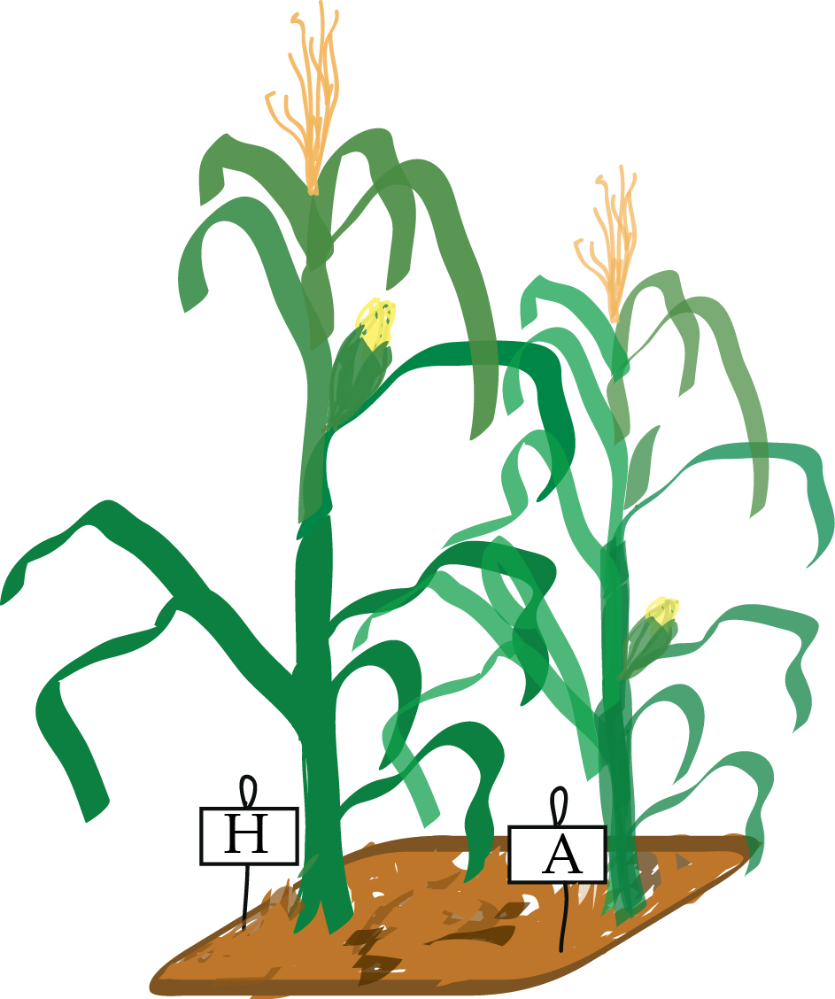

Modern Statistics for Modern Biology
1 Home
Please navigate between and within the chapters of this book via the dropdown menu (“Chapters”) at the top.
How to cite this book: Modern Statistics for Modern Biology, by Susan Holmes and Wolfgang Huber, Cambridge University Press (2019). ISBN: 9781108705295.
License: CC BY-NC-SA
 Generative Models for Discrete Data
Generative Models for Discrete Data
 Statistical Modeling
Statistical Modeling Data visualization
Data visualization Mixture Models
Mixture Models Testing
Testing Multivariate Analysis
Multivariate Analysis High-Throughput Count Data & Generalized Linear Models
High-Throughput Count Data & Generalized Linear Models
Multivariate methods for heterogeneous data
 Networks and Trees
Networks and Trees Image data
Image data Design of High Throughput Experiments and their Analyses
 Acknowledgements
AcknowledgementsNo matching items
1.1 Note to readers
The print version of the book (see below) was published in 2019, but we are continually updating the online version. So if you spot any inaccuracies, mistakes, typos, please let us know and we will do our best to improve the book accordingly.
A particular issue is the code examples. R and its many packages on CRAN and Bioconductor are a highly dynamic environment. We finalized the print version in 2018 on R 3.5 and Bioconductor 3.7. We have been constantly updating the code to changes in R or the packages. What you see here has been built using R version 4.5.1 (2025-06-13) using the most recent release versions of all packages on 2025-09-01. It is possible that we have overlooked unintended changes whose detection is not easy to automate, e.g., in plot outputs or in results from certain computations. We think that this risk is a prize worth paying to enable readers to work in an up-to-date compute environment, but apologize to our readers for possible confusions.
If you spot anything, please alert us via email to wolfgang.huber [at] embl.org.
1.2 Code and data
1.2.1 Package Installation
You can install all the packages required to run every code example in the book via the following command:
source("https://www.huber.embl.de/msmb/install_packages.R")__1.2.2 Data
- Data files (zipped folder)
last modified: 2022-12-15 16:05:03
md5 hash:4aefffbcd826d9645b9e0e5b12274f07 -
1.2.3 Code
1.2.4 Download an electronic copy of the whole book
1.3 Physical Copy
If you would like a hard copy of Modern Statistics for Modern Biology, the book can be purchased from Cambridge University Press

Page built at 01:33 on 2025-09-01 using R version 4.5.1 (2025-06-13)